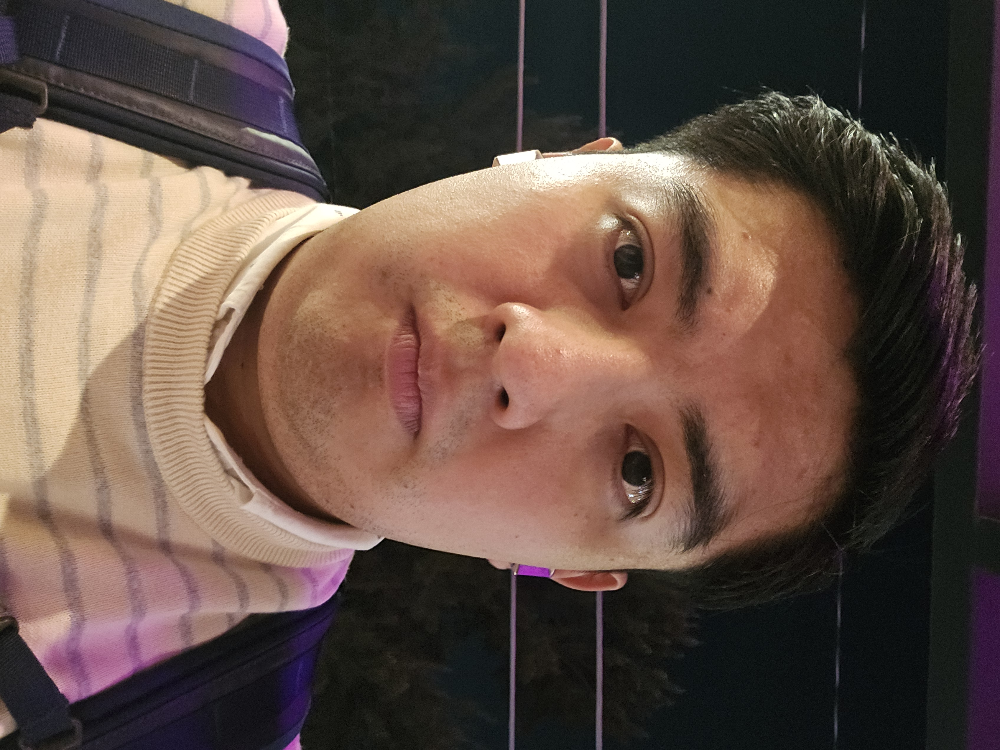

Hola que tal, me llamo Ivan Ocampo, vivo en la Ciudad de Mexico, mis amigos me llaman Qually, Jimmy o Inge. Me encuentro estudiando la carrera de Ing en Informatica, anteriormente estudiaba otra carrera en el IPN pero me cambie de igual manera me encotraba estudiando la carrera de Derecho en la UNAM y retomare mis estudios. Aveces no estoy en ciudad ya que me toca ir a otros estados de la republica a ver a mi familia.
A mi me gusta hacer deporte, me gusta mucho la natacion antes de entrar a la Universidad yo practicaba natacion de tiempo completo, actualmente solo voy al gimnasio, tambien me gussta la musica, un poco la lectura y de tiempo completo la programacion. Me gusta concentir a mis mascotas tengo 2 perros. Cuando me doy un gusto voy a concierto y carreras de autos de carreras.
Primero lo importante, me gusta mucho la programacion, estoy mas enfocado en el desarrollo backend debido a la complejidad que tiene, e de decir que no me decantado por el desarrollo frontend debido a que la mayoria de los chicos que e tenido la fortuna de conocer no ganan lo que deberian ganar, cuando son vacaciones me la paso jugando videojuegos, hasta me compre mi monitor, teclado mecanico y mouse gamer para poder jugar mejor. De la lectura solo leo libros de temas que me enseñen algo interesante aparte de los libros de historia griega o mitologia, ya que no simepre convivo con personas de mi misma carrera.
Practicamente desde que ingrese a la carrera, parte de mi tiempo, me e puesto a trabajar de medio tiempo para tener experiencia en el desarrollo de software, tengo dos certificaciones en Backend enfocado en Java y Spring Boot, tambien me encuentro realizando certificaciones en udemy. Mi objetivo es tener un trabajo en el sector bancario y aparte ser freelancer.
Me puedes encontrar en mis redes sociales...